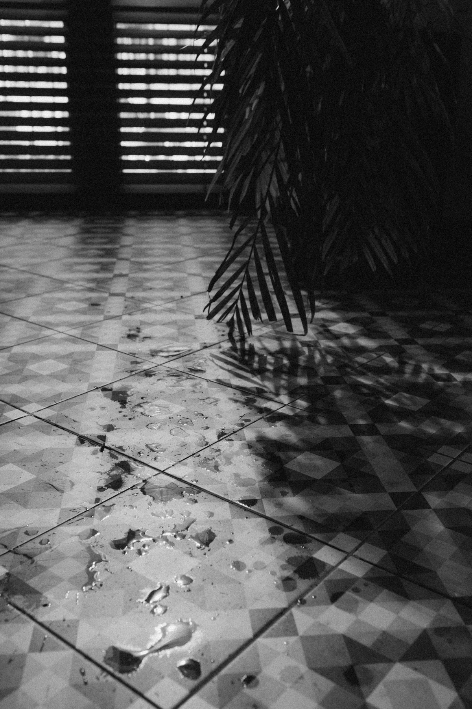
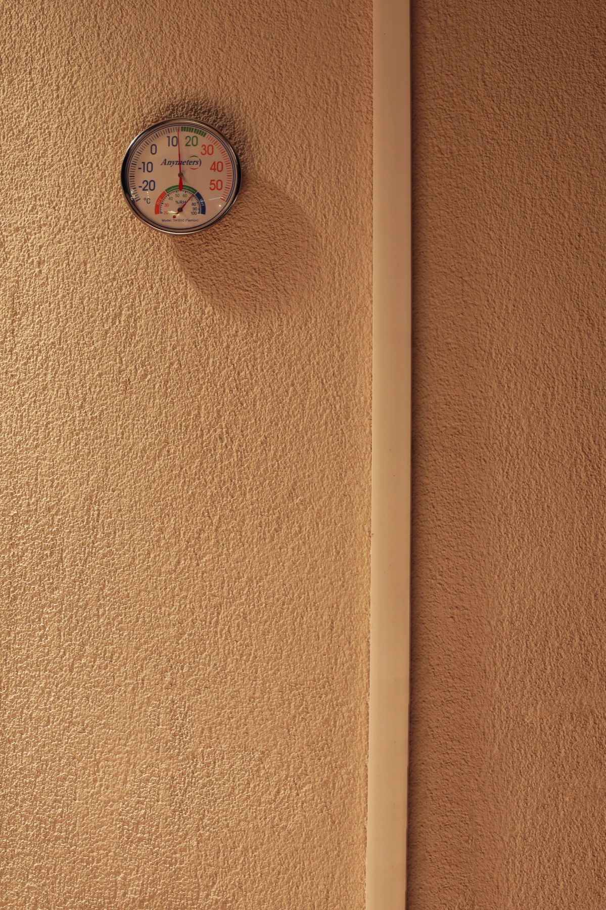
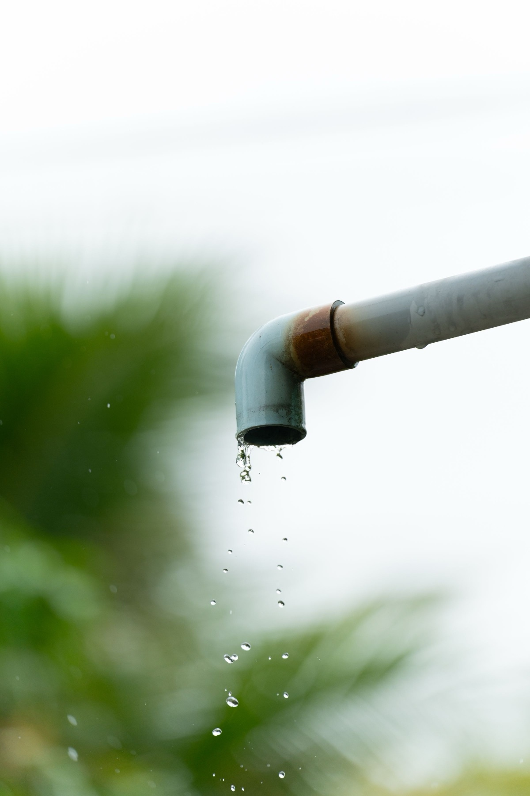

EX / 01
Standing water removal
Address visible water and identify the affected surfaces before a drying setup is planned.
Houston, Texas water restoration
Bayou Dryline helps Houston property owners move from visible water to a focused restoration plan—assessment, removal, drying, and moisture checks without guesswork.
Share what happened, where the water reached, and what you can safely see.
Water does not stay in one place. Early details help shape the right next step.
Restoration scope
Every situation begins with observable conditions. The work may include water removal, controlled drying, and repeated moisture checks based on what is found.

Address visible water and identify the affected surfaces before a drying setup is planned.
Support drying across floors, walls, cavities, and other affected materials according to on-site conditions.
Use repeatable readings to track progress and make drying decisions from evidence, not surface appearance alone.
Assess water from supply lines, fixtures, appliances, roof entry, and indoor overflows after the source is addressed.
Review the visible path of storm-driven water and the materials affected inside the property.

Observable workmanship
Water can move below finished surfaces and into materials that look normal from the room. A sound restoration plan relies on inspection points, monitored conditions, and clearly explained next steps.
Trace visible impact and likely moisture pathways.
Establish readings that can be checked as drying progresses.
Revisit the setup based on conditions rather than a fixed script.
Use follow-up observations to guide the next decision.
A practical sequence
Call or book online and share the source, affected areas, timing, and current visible conditions.
The next step begins with what can be safely observed and measured at the property.
Water removal and drying measures are matched to the materials and conditions found.
Follow-up checks help show what is drying and what may still need attention.
Common sources
Houston properties can take on water through plumbing failures, appliances, fixtures, roof openings, and storm conditions. The visible puddle is only one part of the picture.

Before you decide
These answers stay general because the right restoration steps depend on the source, materials, and on-site conditions.
Protect people first. If there is electrical danger, structural concern, sewage, or an active source you cannot safely stop, keep clear and contact the appropriate utility or emergency service. When it is safe, call or book online and describe what you can see.
Yes. Surface feel does not always show moisture below flooring, behind finishes, or inside absorbent materials. That is why readings and follow-up observations matter.
You can call about leaks, appliance or fixture overflows, indoor flooding, and storm water intrusion. The next step depends on the source and what is affected.
Call 832-242-9380 or book online. Share where the water came from, when it happened, and which areas are wet.
Bayou Dryline · Houston, Texas
Call or book online to share the visible conditions and start with a clear next step.